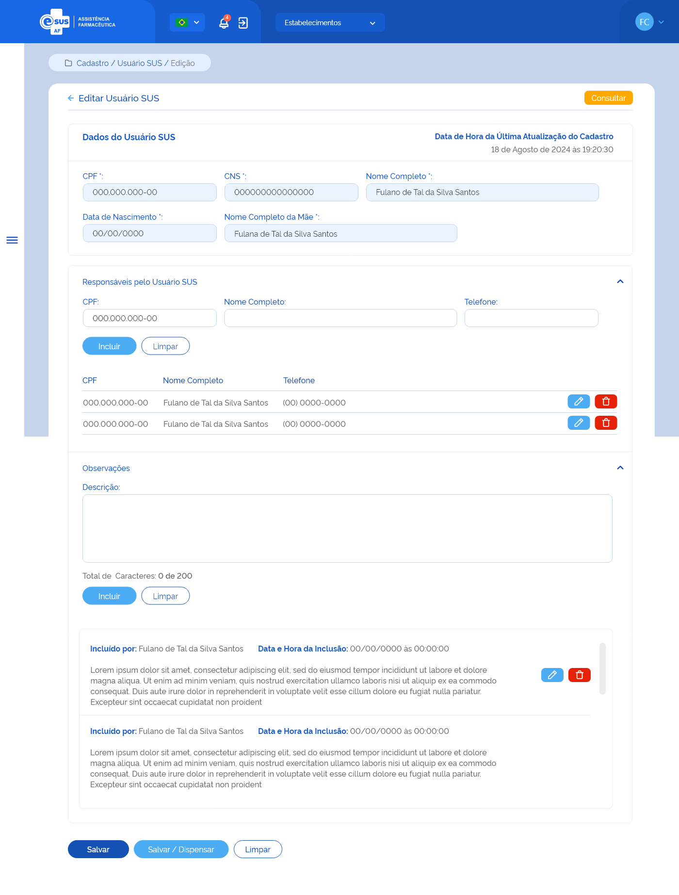

ETE031 - Editar Usuário SUS
Descrição (modelo história de usuário)
Como usuário quero editar o cadastro de um usuário SUS através da recuperação de dados do portal do CADSUS para minha instância.
Protótipo 001

Elementos de Tela
- Bread Crumb – “Cadastro / Usuário SUS / Edição”
- Título da página – “Editar Usuário SUS”
- “Seta” – M - retorna para a Tela de Consultar Usuário SUS
- “Consultar” – BT - retorna para a Tela de Consultar Usuário SUS
- Título da sessão: Dados do Usuário (Campos recuperados do CADSUS e desabilitados para edição)
- Data e Hora da última atualização do Cadastro
- CPF
- CNS
- Nome Completo
- Data de Nascimento
- Nome da Mãe
- Título da Sessão: Responsáveis pelo usuário SUS
- “Expandir/Retrair” – M
- CPF – N (11)
- Nome Completo – A (50)
- Telefone – N (13)
- “Incluir” – BT
- “Limpar” – BT
- Relação Responsáveis pelo usuário SUS
- CPF
- Nome Completo
- Telefone
- “Editar” – BT
- “Excluir” – BT
- Título da sessão: Observações
- Descrição – A (200) / Contador regressivo
- “Incluir” – BT
- “Limpar” – BT
- Relação das Observações
- Incluído por:
- Nome do usuário do sistema que incluiu a observação
- Data e hora da inclusão
- Informação da observação inserida
- “Editar” – BT
- “Excluir” – BT
- Incluído por:
- “Salvar” – BT
- “Salvar/Dispensar” – BT
- “Limpar” – BT
Legenda
TIPO: A = Alfanumérico, N = Numérico, D = Data, M = Imagem, BT = Botão, LK = Link, SU = Seleção Única, SM = Seleção Múltipla, AC = Autocomplete, * = Obrigatório.
Critérios de Aceite
- O usuário somente pode acessar a funcionalidade caso tenha permissão; RGN001
- O acesso à funcionalidade é dado através do menu lateral no item “Cadastro”, subitem “Usuário SUS”, na tela “Consultar Usuários SUS” quando for acionada a opção “Editar”;
- O sistema deve recuperar os dados do usuário SUS cadastrado previamente, permitindo somente a edição dos campos: Responsável pelo Usuário SUS e Observações;
- Caso algum campo retornar vazio da consulta ao portal do CADSUS, este deve ser preenchido com a descrição “Sem informação”;
- O sistema deve permitir incluir um responsável pelo Usuário SUS, conforme:
- A inclusão de um responsável pelo Usuário SUS não é obrigatória;
- Pode ser incluído um ou mais responsáveis pelo Usuário SUS;
- O(s) responsável(is) incluído(s) pode(m) ser excluído(s);
- É necessário informar o nº do CPF, nome completo e nº do telefone do responsável.
- O sistema não deve permitir incluir um responsável com o mesmo nº de CPF de um já relacionado;
- Quando o usuário acionar a opção “incluir” o sistema deve:
- Incluí-lo na relação dos responsáveis pelo usuário SUS;
- Apresentar a relação dos responsáveis incluídos com as ações desejáveis para cada registro.
- Quando o usuário acionar a opção “Editar” em um registro de um responsável, o sistema carrega os dados informados anteriormente e permite alterar somente o número de telefone do responsável;
- Quando o usuário acionar a opção “Excluir”, em um registro de um responsável, o sistema deve excluí-lo da lista de responsáveis pelo usuário SUS;
- O sistema deve permitir incluir observações ao cadastro do Usuário SUS, conforme:
- A indicação de uma observação não é obrigatória;
- Pode ser incluída uma ou mais observações para o Usuário SUS;
- A(s) observação(ões) incluída(s) pode(m) ser excluída(s).
- Para a inclusão de uma ou mais observações ao cadastro do Usuário SUS, o usuário deve informar o detalhe da observação;
- Quando o usuário acionar a opção “incluir” o sistema deve:
- Incluí-la na relação das observações;
- Apresentar o nome completo do usuário do sistema que a incluiu e a data e hora da inclusão.
- Apresentar a lista de observações em ordem cronológica decrescente (da última à primeira);
- As ações “Editar” e “Excluir” somente serão apresentadas para cada registro criado pelo usuário que incluiu a observação;
- Quando o usuário acionar a opção “Editar”, em um registro de uma observação, o sistema carrega os campos com os dados informados anteriormente e permite a edição;
- Quando o usuário acionar a opção “Excluir”, em um registro de uma observação, o sistema deve exclui-la da lista das observações do usuário SUS;
- Quando o usuário acionar a opção de “Salvar”, o sistema verifica se o preenchimento das informações atende às validações listadas, atualiza o cadastro do Usuário SUS, mantém o estado do registro como “Ativo” e a situação como “Cadastrado”, apresenta a mensagem de sucesso e retorna à tela de consulta aos Usuários SUS apresentando este registro como o primeiro da relação dos Usuários cadastrados para a instância; MSG093 RGN005
- Quando o usuário acionar a opção de “Salvar/Dispensar”, o sistema verifica se o preenchimento das informações atende às validações listadas, atualiza o cadastro do Usuário SUS, mantém o estado do registro como “Ativo” e a situação como “Cadastrado”, apresenta a mensagem de sucesso e direciona para a tela de cadastrar dispensação carregando automaticamente os dados do Usuário SUS recém cadastrado; MSG093 RGN005 ETE034
- Quando o usuário acionar a opção de “Voltar” ou “Consultar”, o sistema deve apresentar a mensagem de alerta ao usuário. Caso confirme a ação, retorna à tela de consulta aos Usuários SUS e não salva as edições realizadas. Caso a ação não seja confirmada, permanece na tela de cadastro de Usuário SUS; MSG006
- O sistema deve gravar a data, hora e CPF e nome do usuário que a executou qualquer ação de alteração no estado do registro. RGN005